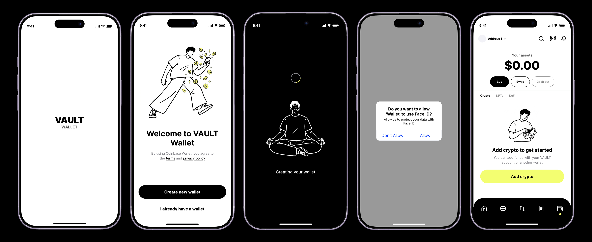
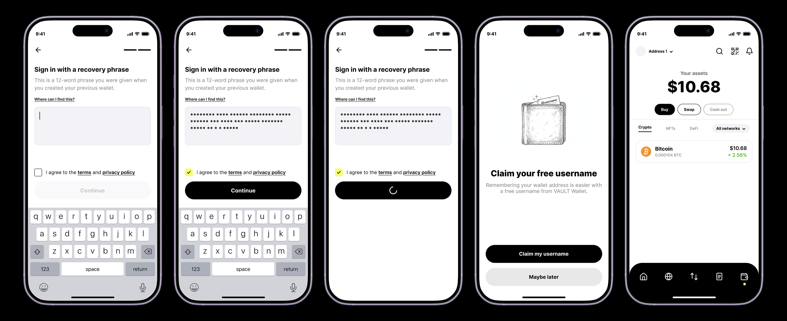
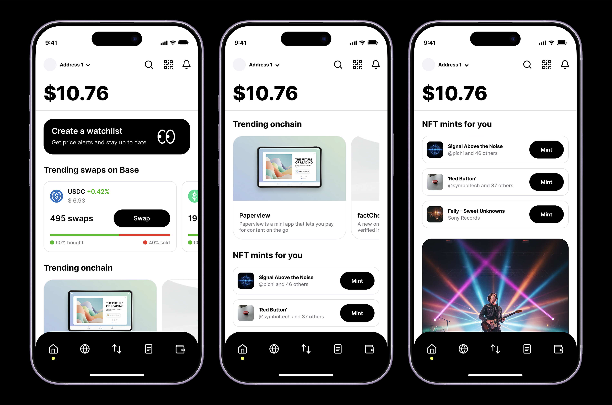
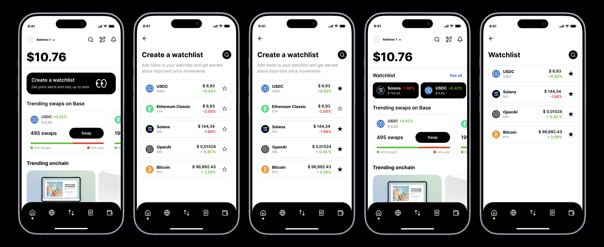

Context
Almost every crypto wallet looks the same: a dark interface, dense charts and jargon that turn the screen into a spaceship cockpit. Fine if you're experienced, a wall if you're not. I wanted a wallet where creating or importing it, buying your first coin and tracking prices feels no scarier than setting up a normal banking app.
Design challenge
The core bet was the visual language. Instead of the usual crypto aesthetic, I leaned on Asian design: lots of air, large type, soft rounded shapes, lively illustrations and an accent color instead of dark techiness. The hard part was holding that light, almost friendly tone even on the most nerve-racking steps, be it the seed phrase, a purchase confirmation or security, without turning the wallet into a toy that lost its power.

My role
I owned these scenarios end to end: flow logic, states, UI and tone. I built onboarding and wallet import, the home with assets and trends, buying a coin and the watchlist, and kept one visual language across every screen.
Goals
- Move from a crypto spaceship to a calm, human interface
- Walk a newcomer through creating and importing a wallet without fear
- Make buying the first coin a short, predictable flow
- Build a home that works as both an overview and an entry point
Solution
Onboarding without pressure: I broke wallet creation into calm steps: welcome, generation, Face ID and an empty home that points to the first action. No wall of terms up front; complexity shows up only when it's actually its turn.

Importing an existing wallet: the person picks a sign-in method and a source, and I put the seed-phrase scam warning right into the flow, at the moment of the decision, instead of hiding it in help. Here safety is part of the conversation, not fine print.


A home that never overwhelms. Everything is ordered by priority and reads calmly from top to bottom, and any action is just one tap away.

Buying without surprises: this is the most nerve-racking moment, so the flow is as predictable as possible: amount, payment method, an honest total with fees before you confirm, then processing and a clear success screen with the new balance. You always know what you're paying for and what happens next.

A watchlist straight from home: star a few coins and the list is instantly pinned and opens as its own screen with alerts on important price moves. As few steps as possible between “interesting” and “watching”.

Outcome
- Clear from the first screen: even with no crypto experience, the person knows what to do and reaches their first coin on their own, without outside help.
- Trust through transparency: fees, seed phrases and risks are shown honestly and at the right moment, so the wallet never feels like a black box.
- Stands apart from the market: a calm, warm visual language sets the product apart from dark techy wallets and widens the audience beyond crypto enthusiasts.